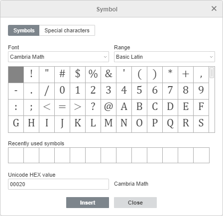
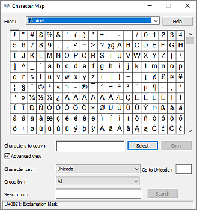

Umetnite simbole i znakove
Prilikom rada na prezentaciji u Presentation Editor-u, možda će biti potrebno da umetnete simbol koji nije dostupan na tastaturi. Da biste umetnuli takve simbole u prezentaciju, koristite opciju Insert symbol i pratite sledeće jednostavne korake:
- Postavite kursor na mesto gde treba umetnuti poseban simbol.
- Prebacite se na tab Insert na gornjoj alatnoj traci.
- Kliknite na ikonicu Symbol.
-
Kliknite na opciju More symbols.

- Pojaviće se dijalog Symbol i moći ćete da izaberete željeni simbol,
-
Koristite odeljak Range da biste brzo pronašli potreban simbol. Svi simboli su podeljeni u posebne grupe, na primer, izaberite „Currency Symbols“ ako želite da umetnete simbol valute.
- Ako se traženi znak ne nalazi u skupu, izaberite drugi font. Mnogi fontovi sadrže znakove koji se razlikuju od standardnog skupa.
- Takođe možete uneti Unicode heksadecimalnu vrednost željenog simbola u polje Unicode hex value field. Ovaj kod se može pronaći u Character map.
-
Možete koristiti i tab Special characters da biste izabrali poseban znak sa liste.
Prethodno korišćeni simboli su takođe prikazani u polju Recently used symbols.

- Kliknite na Insert. Izabrani znak će biti dodat u prezentaciju.
- Da biste umetnuli popularan ili nedavno korišćen simbol, kliknite na strelicu ispod ikonice Symbol. Najnoviji simboli će se pojaviti na početku liste.
Umetnite ASCII simbole
ASCII tabela se takođe koristi za dodavanje znakova.
Da biste to uradili, držite pritisnut taster ALT i koristite numeričku tastaturu da unesete kod znaka.
Napomena: obavezno koristite numeričku tastaturu, a ne brojeve na glavnoj tastaturi. Da biste omogućili numeričku tastaturu, pritisnite taster Num Lock.
Na primer, da biste dodali znak paragrafa (§), držite pritisnut ALT dok kucate 789, a zatim otpustite taster ALT.
Umetnite simbole pomoću Unicode tabele
Dodatni znakovi i simboli mogu se pronaći i u Windows tabeli simbola. Da biste otvorili ovu tabelu, uradite sledeće:
- u polje Search unesite „Character table“ i otvorite je,
-
istovremeno pritisnite
Win+R, a zatim u prozoru koji se pojavi unesitecharmap.exei kliknite na OK.
U otvorenom Character Map-u izaberite jedan od Character sets, Groups i Fonts. Zatim kliknite na željene znakove, kopirajte ih u ostavu i nalepite gde je potrebno.